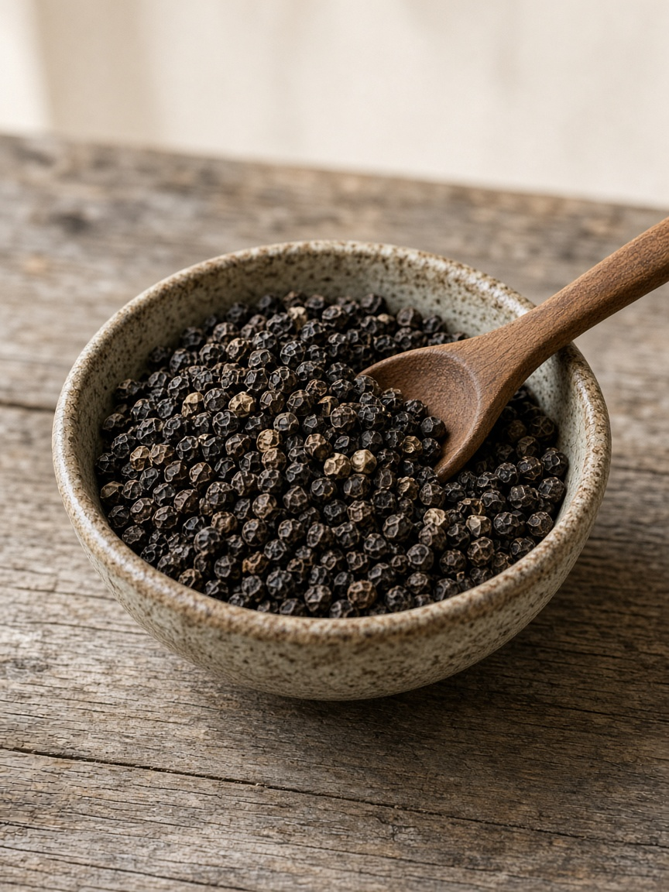
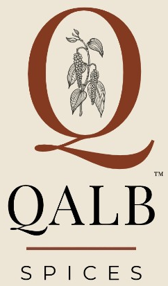
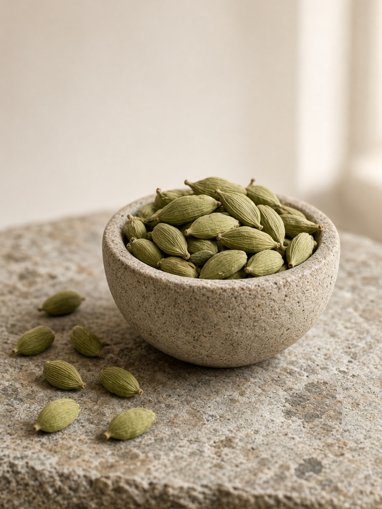
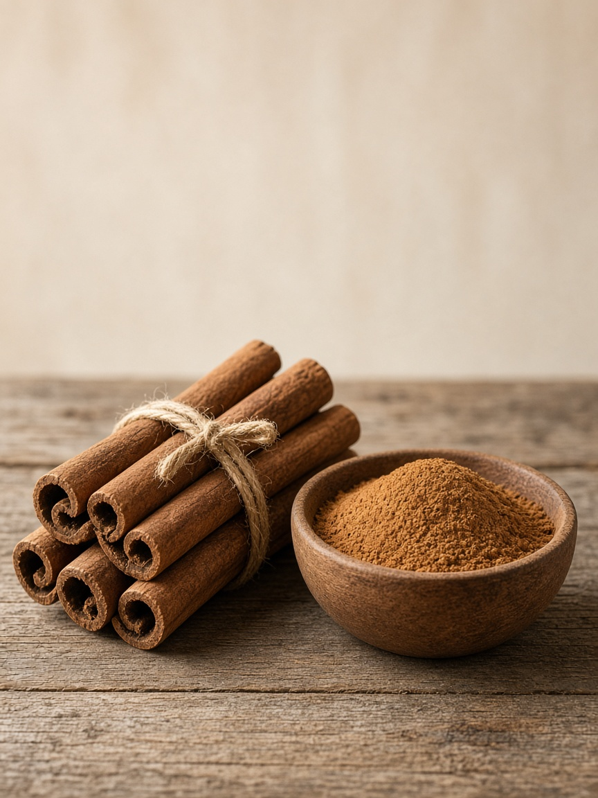
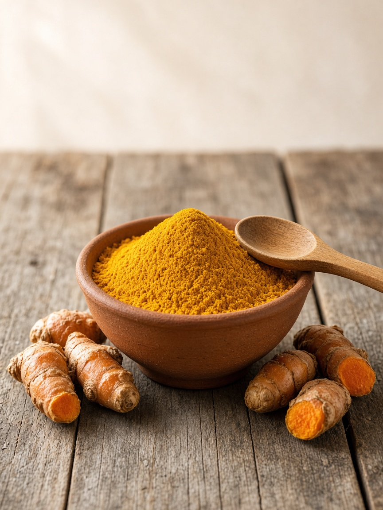
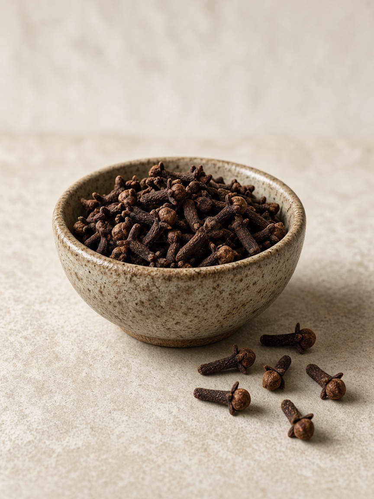
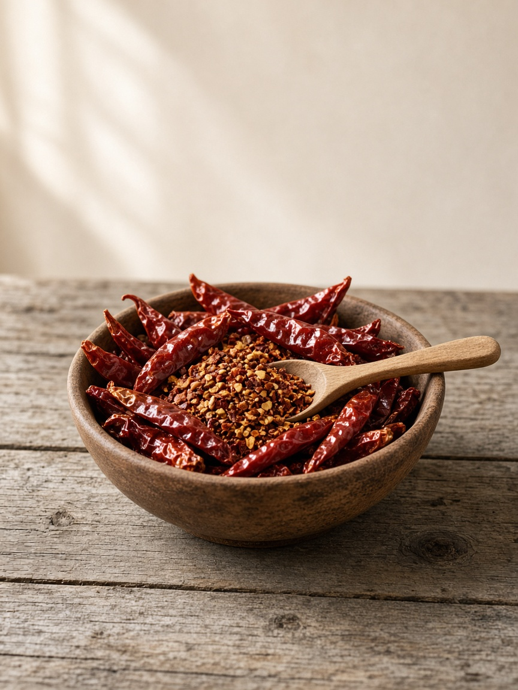
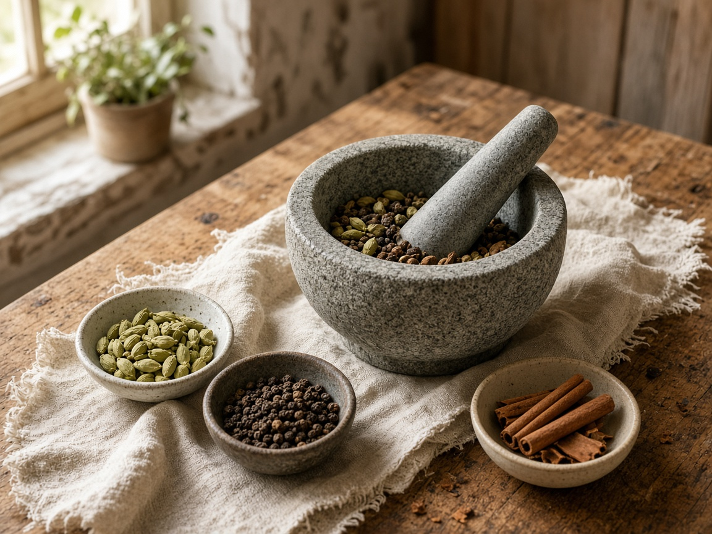

In stockBlack pepper, whole
Bold, aromatic peppercorns with a clean, lingering heat. Best cracked fresh over anything.

More than just a spice
Carefully sourced from the finest farms, QALB brings you pure, aromatic and naturally rich spices.
Shop spicesThe collection
Whole spices, ground in small batches and sealed to keep their aroma. Each one is chosen for its flavour first.

In stockBold, aromatic peppercorns with a clean, lingering heat. Best cracked fresh over anything.

NewSweet, floral pods, hand-picked and slowly dried. Lovely in chai, rice and baking.

SaleDelicate, warm and sweet, rolled by hand into fine layers. Brings depth to both sweet and savoury.

In stockEarthy and deeply golden, ground from whole roots. The quiet heart of a good curry.

In stockIntensely fragrant buds with a sweet, numbing warmth. A little goes a long way.

In stockSun-dried chillies with a bright, rounded heat. Use whole, as flakes, or ground.

Our story
More than just a spice, a standard of quality.
We work directly with growers who share our care for the land, and we bring every harvest to you whole, fresh and unhurried, the way spice has always been meant to be.
The pepper vine in our mark is a reminder of where it began: a single plant, a single farm, and a promise that what is in the jar is exactly what grew in the field.
Explore the collectionFrom farm to jar
We buy from trusted farms and visit them often. Spices are picked at their peak, not their quickest.
Sun-dried and sorted by hand, so only whole, aromatic spice moves on. Nothing is added, ever.
Ground and sealed in small batches, so what reaches your kitchen is fresh and full of flavour.
Cook with QALB
Crush four pods with a few peppercorns and a cinnamon quill. Simmer with tea, milk and water for five minutes.
Read the recipeToast a teaspoon of turmeric and two cloves in ghee, then add rinsed basmati and water. Cook until fluffy.
Read the recipeWarm olive oil gently with cracked pepper and chilli flakes. Cool, jar it, and spoon over eggs or bread.
Read the recipeWhy QALB
Sourced from trusted growers, traced to the field.
Nothing added. Only the spice, at its most aromatic.
Sealed in small batches to keep every note intact.